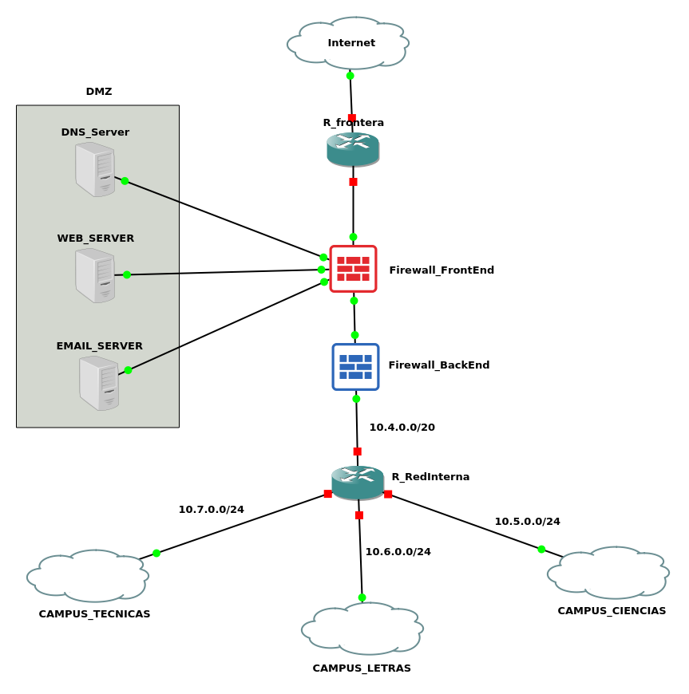

VISION GENERAL DE LA ARQUITECTURA
ANÁLISIS DE REQUISITOS
La universidad tiene 3 facultades separadas por varios kilómetros, por lo cual se ha establecido que para la interconexión entre ellas se implementará una MAN. Esta MAN constará de un router central que permitirá el tráfico de datos dentro de la red interna, además contará con una DMZ para garantizar la seguridad de la red interna. Dentro de la DMZ estará los servidores de correo, web y DNS ya que estos siempre deberán estar expuestos al tráfico de la red externa. La impelementación de la DMZ implica tener 2 firewall una para el primer filtrado de la DMZ y la segunda para el filtrado de la red interna. Finalmente para la conexión a internet se contará un Router de frontera.
DISEÑO PROPUESTO PARA LA RED

img 1.1: Diseño general de red para la universidad.